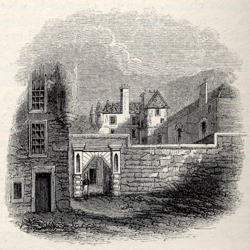
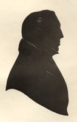

|
|
||||||
|
Home | Corson Collection | Biography | Works | Image Collection | Recent Publications | Portraits | Correspondence | Forthcoming Events | Links | E-Texts | Contact John Morrison (1782-1853): Land-Surveyor, Artist, and Poet
On completing his studies, Morrison declined the offer of a position on one of the Earl's settlements, much to his protector's disappointment. He returned to his parents' farm of Fellend, near Ringford, Galloway, and combined farming with land-surveying. In 1805, he came to the attention of the great civil engineer Thomas Telford who was then constructing a new bridge over the River Dee at nearby Tongland. Telford engaged him to survey a projected railway from Glasgow to Berwick, and subsequently, to work on numerous building projects in Scotland, England and Wales.
In a letter to Scott dated 20 May 1819, Morrison describes how he had returned to painting while illness excluded any more strenuous activity. Now that he has fully recovered, he is resolved to 'abandon a proffession [sic] that requires neither much taste nor imagination' in favour of 'one which I have ever loved' (National Library of Scotland MS 3890/100-01). The decision, Morrison insists, is not as reckless as it might first appear. He has kept in his hand as an artist throughout his professional life, and has been in the habit of sketching and painting scenes observed when surveying. In a further letter to Scott, dated 20 June 1820, he hopes that his newly acquired skill as a lithographer will prove a useful sideline (NLS MS 3891/67-68). The map of the Abbotsford estate that Morrison drew up for Scott over the coming months was intended to be his last piece of work before winding up his surveying business. Information is scarce on the last thirty years of Morrison's life. Morrison's own 'Reminiscences' published in Tait's Edinburgh Magazine (1843-44) treat his dealings with Scott as the central episode of his life and give little indication as to the success of his career change. Alexander Trotter, in his East Galloway Sketches (1901) relates that, having acquired a reputation for taking correct likenesses, Morrison was invited to Liverpool in 1821 to paint portraits. He failed to find steady work, however, and following a brief stay in London where he befriended Sir Thomas Lawrence, he returned to Galloway. It seems likely that he found himself forced once again to combine painting and surveying. The 1851 Census of Kirkcudbrightshire records his profession as 'civil engineer'. Trotter states that 'some of Morrison's sketches with his workmanship acknowledged may be seen in the Abbotsford Edition of the Waverley Novels'. However, only one small illustration for The Fair Maid of Perth (vol. XI), a sketch of Gowrie House, Perth (see above right) is actually attributed to Morrison. In 1832 he published a volume of poems (Poems of John Morrison) which met with little success. Trotter suggests that the latter part of his career was blighted by ostracism. Having offended his former protector the Earl of Selkirk through a printed comment on his aunt, he became persona non grata to the gentry. The 1851 Census recalls that he lived alone with his unmarried sister Helen, a school-mistress, and his niece Jane Melville, an assistant teacher who became his heir. He died on 8 June 1853 and is buried in the graveyard of the Old Priory Church, Tongland. Morrison is briefly recalled in a number of memoirs of Galloway life in the early nineteenth century. John Patterson's Memoir of Joseph Train (1857) paints an unflattering picture of a man 'of dogmatic assertions and high pretensions' (p. 58). Train (portrayed, right) recalled dining with Sir Walter Scott and Patterson: 'A pair of ptarmigans at table, which Sir Walter said he had received that day as a present from the North, was a treat to everyone present' except Morrison, 'who affirmed that these birds were as plentiful as pigeons in Galloway.' 'So great was the vanity of Morrison', Patterson continues, 'that even Sir Walter Scott was not allowed to pass uncontradicted.' Sir David Wilkie's recently completed group-portrait The Abbotsford Family was exhibited to the company, only for Morrison to declare that 'it was neither like Sir Walter nor any of his family'. Scott's daughter Anne archly replied, 'Oh, I forgot, Mr Morrison, you are a painter yourself, and I have often heard it remarked, that there is no friendship in trade, but I never saw it verified before.' Perhaps, though, Train's acerbic recollections are coloured by rivalry with Morrison, as both competed to supply Scott with Galloway lore. (For Train's relations with Scott, see the pages on Guy Mannering and Old Mortality.) Malcolm M'L. Harper in his Rambles in Galloway (1896) describes Morrison as 'one of Galloway's most original characters in his day' (p. 115). 'In art', Harper regrets, 'he did not excel, but as an engineer and land surveyor he was distinguished; and had he possessed that steadiness of purpose necessary to success in life, he might have risen to eminence in that walk'. He was also 'somewhat of a humorist, and was famed for his pointed satirical remarks'. Friends recalled him as 'a vain as well as a proud man' who 'always endeavoured to leave the impression in company that he was 'something more than common humanity' (p. 116). Trotter acknowledges Morrison's reputation for vanity and condescension, but has some sympathy for his plight, arguing that Galloway could scarcely supply the quality of company to which he had been habituated from an early age! Morrison's dealings with Scott certainly bear witness to Morrison's conceit and spirit of contradiction but also give a taste of the (sometimes involuntary) humour that made him a favoured companion of many of Scott's peers in the literary and artistic worlds. Last updated: 03-June-2005
|
||||||